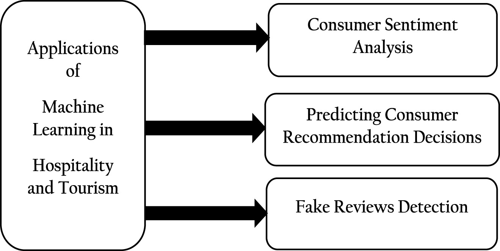
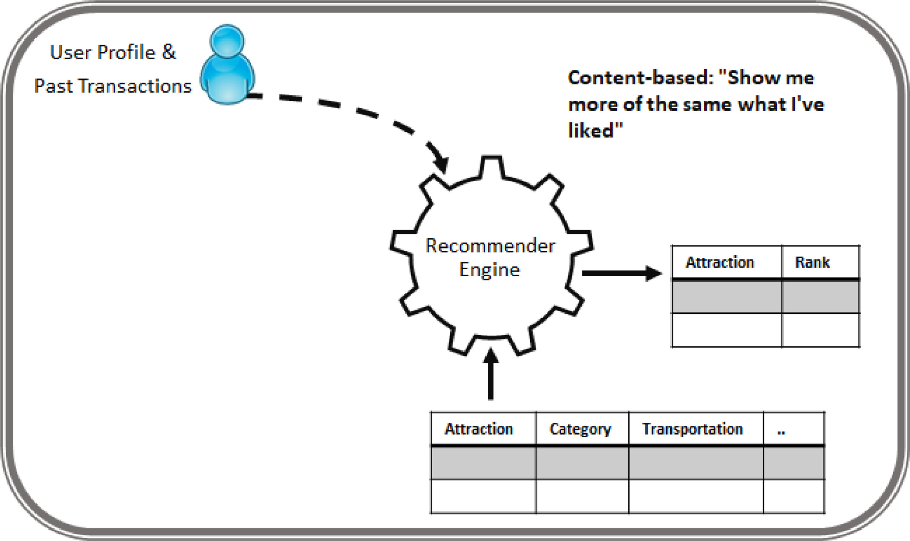
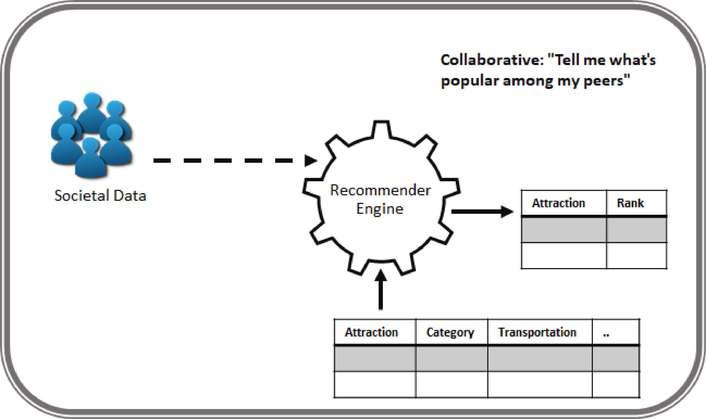
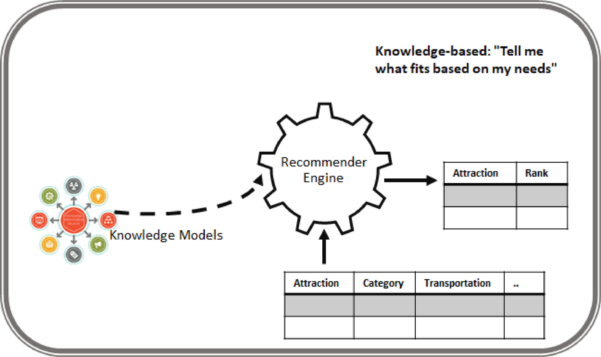
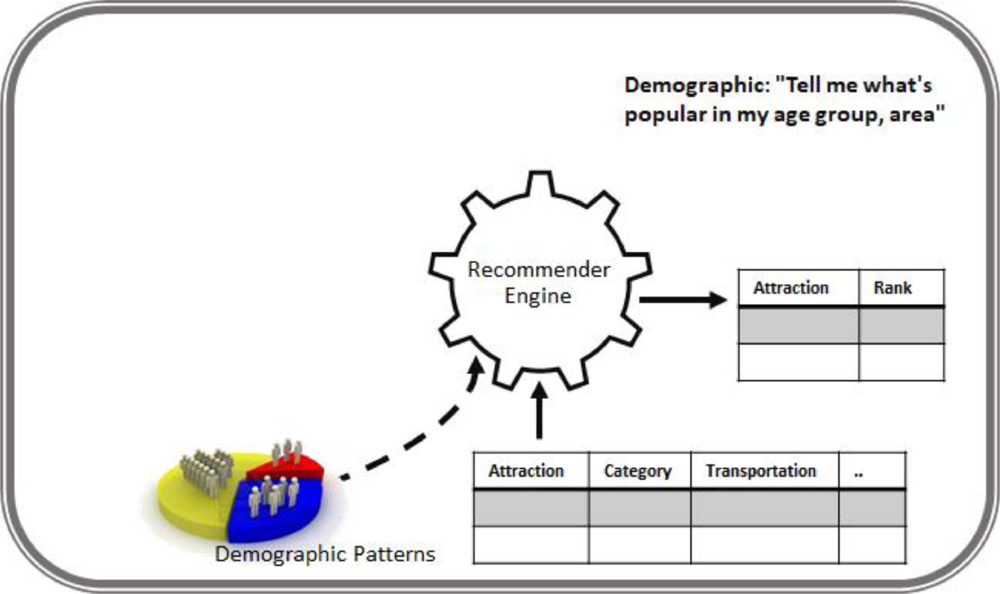
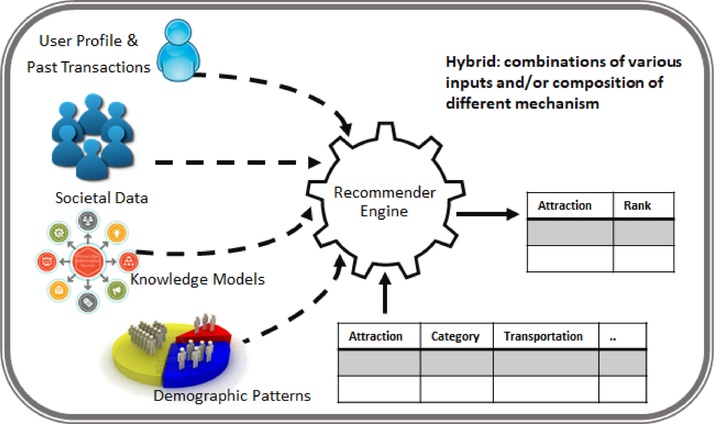

Klantbeeld optimalisatie
Inleiding
Wat is het hoofdthema?
Waarom is het belangrijk?
- Illustraties success / fail
Voor wie is het belangrijk?
- Doelgroep
Wat is de propositie?
- Wat kun je met de aangeleverde kennis en / of tooling?
Trends
Horizons
 Bron: Webb (2019)
Bron: Webb (2019)
Wat komt er op korte / lange termijn op organisaties af?
Technologieen
 Bron: “4 Exciting New Trends in the Gartner Emerging Technologies Hype Cycle” (n.d.)
Bron: “4 Exciting New Trends in the Gartner Emerging Technologies Hype Cycle” (n.d.)
Bron: SXSW (2023)
Sectoren
Trends in Air Travel
“Enhanced customer experience: Omnichannel expansion continues. Immersive realities could allow brands to create more engaging and interactive experiences for their customers: vir- tual tours and events, utilizing AR rendering or a digital twin to try on clothing or furniture from the comfort of one’s home, or traveling anywhere at the drop of a hat with very little carbon footprint (or, for IRL trips, experiencing a digital overlay of recommendations, historical models and simula- tions, or just-in-time booking opportunities).” (“What We See - Future Today Institute” 2023)
“New screen and spatial tracking technology could make it possible to show personalized information and wayfinding details in context. Partnering with Misapplied Sciences, Delta has piloted a “parallel reality” departure board at Detroit Metropolitan Airport. Travelers scan a digital boarding pass as overhead sensors track their presence and position and relay personal- ized flight details on a multi-view pixel display; the display can simultaneously project different colors of light in different directions depending on where the viewer is standing. The display technology, combined with beacon tracking, could create the “Minority Report” vision for contextual advertising and wayfinding in stadiums, shopping centers, and more.” (“What We See - Future Today Institute” 2023)
Literatuur review
Methodes en Toepassingen Machine Learning en AI

“Thus, this is a research gap in automatically scrapping information from user-generated online reviews to accurately predicting drivers for consumer recommendations, understanding the advice to different services, and finally forming them into NPS.” (Jain, Pamula, and Srivastava 2021)
|  |  |  |
|  |  |
Bron: Renjith, Sreekumar, and Jathavedan (2020)
Responsible AI
From Shin, Rasul, and Fotiadis (2021)
Table A1. Measurements
| Variables | Measures |
|---|---|
| Transparency | (1) The evaluation and the criteria of algorithms used should be publicly released and understandable to people (Understandability) |
| (2) Any outputs produced by an algorithmic system should be explainable to the people affected by those outputs (Explainability) | |
| (3) Algorithms should let people know how well internal states of algorithms can be understood from knowledge of their external outputs (Observability) | |
| Fairness | (1) The AI system has no favoritism and does not discriminate against people (Nondiscrimination) |
| (2) The source of data throughout an algorithm and its data sources should be accurate and correct (Accuracy) | |
| (3) I believe the AI system follows the due process of impartiality with no prejudice (Due process) | |
| Accountability | (1) An AI system requires a person in charge who should be accountable for its adverse individual or societal effects in a timely fashion (Responsibility) |
| (2) Algorithms should be designed to enable third parties to examine and review the behavior of an algorithm (Auditability) | |
| (3) Algorithms should have the ability to modify a system in its entire configuration using only certain manipulations (Controllability) | |
| Explainability | (1) I found AI algorithms are easily comprehensible |
| (2) I think the AI services are interpretable and understandable | |
| (3) I can figure out the internal mechanics of machine learning | |
| Trust | (1) I trust the recommendations by algorithm-driven services |
| (2) Recommended items through algorithmic processes are credible | |
| (3) The algorithm service results are trustworthy | |
| Personalization | (1) I think that the recommended items reflect my personalized preferences |
| (2) I found the recommended items are a great match for my needs | |
| (3) It seems that the algorithm-based service is customized to me | |
| Accuracy | (1) The contents produced by algorithms are accurate |
| (2) Recommended items by algorithm systems are in general precise | |
| (3) Algorithm-enabled recommendations are exact and correct | |
| Attitude | (1) I am fairly pleased with algorithm services |
| (2) Overall, the algorithm services fulfill my initial expectations | |
| (3) Generally, I am satisfied with the contents of algorithm services | |
| Intention | (1) I would like to intend to use algorithm services |
| (2) I will continue to use algorithm services | |
| (3) I intend to use and will further adopt algorithm services |
Zoektermen
Google Scholar:
“customer experience air travel”
“customer experience air travel recommender”
“air travel recommender systems”